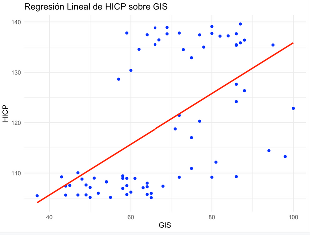

QuestionPregunta
What people search for online can reflect their worries before official statistics do. Does interest in living in Europe, searched from Spain, move with the harmonised index of consumer prices (HICP) that the European Central Bank uses to track inflation?
Lo que la gente busca en internet puede reflejar sus preocupaciones antes que las estadísticas oficiales. ¿Se mueve el interés por vivir en Europa, buscado desde España, junto con el índice armonizado de precios de consumo (IPCA) que usa el Banco Central Europeo para seguir la inflación?
DataDatos
Monthly Google Trends series from Spain for “vivir en europa” and “comprar casa europa”, January 2019 to January 2025, and the EU's monthly HICP from Eurostat (2015 = 100). Related searches rising fastest included living in Portugal (+140%) and in Switzerland (+120%).
Series mensuales de Google Trends desde España para «vivir en europa» y «comprar casa europa», de enero de 2019 a enero de 2025, y el IPCA mensual de la UE de Eurostat (2015 = 100). Entre las búsquedas relacionadas que más crecieron estaban vivir en Portugal (+140 %) y en Suiza (+120 %).
I rescaled both series so their maximum equals 100 and compared them in R.
Reescalé ambas series para que su máximo fuera 100 y las comparé en R.
ResultsResultados
Key resultsResultados clave
- SlopePendiente
- 0.64 per HICP point0,64 por punto de IPCA
- p-valuep-valor
- < 0.001
- Adjusted R²R² ajustado
- 0.31 (r ≈ 0.57)0,31 (r ≈ 0,57)
A linear regression of search interest on the HICP finds a positive, highly significant relationship: higher prices go together with more searches about living in Europe. Price levels explain about a third of the variation in search interest.
Una regresión lineal del interés de búsqueda sobre el IPCA encuentra una relación positiva y muy significativa: precios más altos van de la mano de más búsquedas sobre vivir en Europa. El nivel de precios explica en torno a un tercio de la variación del interés de búsqueda.

Limitations and next stepsLimitaciones y próximos pasos
Correlation is not causation, and both series trend upwards over these years, which can make unrelated series look connected. Other events, such as energy prices and trade tensions, affect both.
Correlación no implica causalidad, y ambas series crecen a lo largo de estos años, lo que puede hacer que series sin relación parezcan conectadas. Otros acontecimientos, como los precios de la energía o las tensiones comerciales, afectan a ambas.
A stronger version would remove the trends first (for example, by modelling month-to-month changes) and test whether search interest moves before official inflation figures are published, which is where its value as an early signal would lie.
Una versión más sólida eliminaría primero las tendencias (por ejemplo, modelando los cambios mensuales) y comprobaría si el interés de búsqueda se adelanta a la publicación de los datos oficiales de inflación, que es donde estaría su valor como señal temprana.